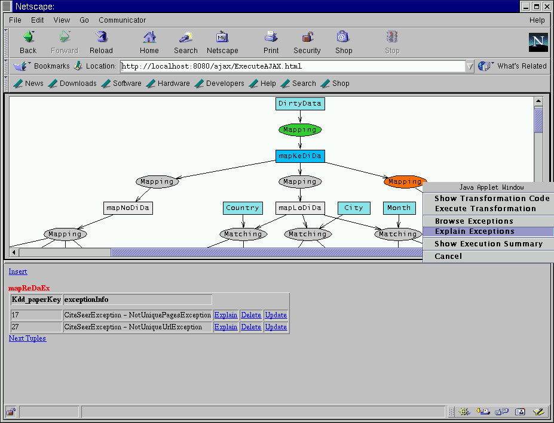

|
Let us now examine and explain the occurred exceptions, by choosing "Explain Exceptions" for the "red" transformation.
The second frame prints the key of the input tuples originating the exception as well as the type of exception.
One can then explain each exception tuple. Let us then click on "Explain" for tuple 17.

|
|